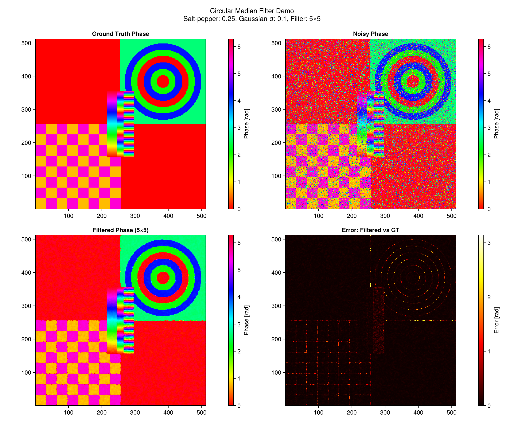
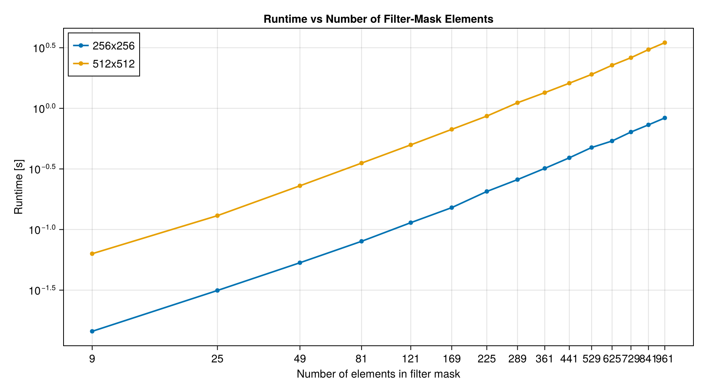

using CircleMedianFilter
using CairoMakie
using Statistics
using Random
using PrettyTablesCircular Median Filter Demonstration
This example demonstrates the effectiveness of circular median filtering for phase data containing various types of noise and discontinuities.
Overview
The circular median filter is specifically designed for circular data (like phase images) where standard median filtering fails due to the wraparound nature of angular data. This demo shows:
- Synthetic Phase Generation: Creating test phase patterns with circles, stripes, and checkerboards
- Noise Addition: Adding salt-and-pepper and Gaussian noise
- Filter Performance: Comparing results across different filter sizes and noise levels
- Quantitative Analysis: Measuring improvement in terms of phase error
Creating Test Phase Data
We create a complex synthetic phase image with multiple challenging features:
gt_phase = CircleMedianFilter.create_test_phase()512×512 Matrix{Float64}:
0.785398 0.785398 0.785398 … 0.0 0.0 0.0 0.0
0.785398 0.785398 0.785398 0.0 0.0 0.0 0.0
0.785398 0.785398 0.785398 0.0 0.0 0.0 0.0
0.785398 0.785398 0.785398 0.0 0.0 0.0 0.0
0.785398 0.785398 0.785398 0.0 0.0 0.0 0.0
0.785398 0.785398 0.785398 … 0.0 0.0 0.0 0.0
0.785398 0.785398 0.785398 0.0 0.0 0.0 0.0
0.785398 0.785398 0.785398 0.0 0.0 0.0 0.0
0.785398 0.785398 0.785398 0.0 0.0 0.0 0.0
0.785398 0.785398 0.785398 0.0 0.0 0.0 0.0
⋮ ⋱ ⋮
0.0 0.0 0.0 2.61799 2.61799 2.61799 2.61799
0.0 0.0 0.0 2.61799 2.61799 2.61799 2.61799
0.0 0.0 0.0 … 2.61799 2.61799 2.61799 2.61799
0.0 0.0 0.0 2.61799 2.61799 2.61799 2.61799
0.0 0.0 0.0 2.61799 2.61799 2.61799 2.61799
0.0 0.0 0.0 2.61799 2.61799 2.61799 2.61799
0.0 0.0 0.0 2.61799 2.61799 2.61799 2.61799
0.0 0.0 0.0 … 2.61799 2.61799 2.61799 2.61799
0.0 0.0 0.0 2.61799 2.61799 2.61799 2.61799Filter Performance Analysis
Now we test the filter performance across different noise levels and filter sizes:
# Add random noise to the phase
Random.seed!(42) ## For reproducible results
# Test different noise levels
const noise_levels = [0.05, 0.25, 0.5, 0.75]
const gaussian_levels = [0.1, 0.03] ## Test two levels of Gaussian noise
const filter_radii = [1, 2, 3] ## This creates 3×3, 5×5, and 7×7 filters
println("Testing circular median filter performance...")
println("Noise levels: ", noise_levels)
println("Gaussian levels: ", gaussian_levels)
println("Filter sizes: ", [2r + 1 for r in filter_radii])Testing circular median filter performance...
Noise levels: [0.05, 0.25, 0.5, 0.75]
Gaussian levels: [0.1, 0.03]
Filter sizes: [3, 5, 7]Example: Single Demonstration
Let's show a detailed example with moderate noise:
# Example with moderate noise level
noise_fraction = 0.25
gaussian_std = 0.1
filter_radius = 2 # 5×5 filter
# Create noisy version
noisy_phase = copy(gt_phase)
CircleMedianFilter.add_phase_noise!(noisy_phase, noise_fraction, gaussian_std);
# Apply circular median filter
filtered_phase = similar(noisy_phase)
arc_distance_median_filter!(filtered_phase, noisy_phase, filter_radius, filter_radius)512×512 Matrix{Float64}:
0.74925 0.755261 0.755261 … 0.00130695 6.24646 6.24646
0.731951 0.74925 0.755261 6.24646 6.2453 6.2453
0.74925 0.755261 0.772096 6.24646 6.24646 0.0119377
0.755261 0.755261 0.772096 6.24646 6.2639 0.0119377
0.790225 0.810944 0.810944 6.2639 0.0302703 0.0406464
0.851877 0.83182 0.83182 … 6.24563 0.0302703 0.0406464
0.85618 0.848271 0.848271 0.0302703 0.0406464 0.0482777
0.83182 0.83182 0.790225 6.23961 6.2639 6.2639
0.790225 0.790225 0.779428 6.22192 6.26175 6.24225
0.750821 0.750788 0.756141 6.18584 6.22192 6.22192
⋮ ⋱ ⋮
6.26243 6.27134 6.27581 2.64288 2.6706 2.61906
6.2476 6.26243 6.27134 2.65329 2.6706 2.67668
6.26243 6.26243 6.27329 … 2.65212 2.64288 2.65212
6.26243 6.26243 6.27329 2.64288 2.61859 2.65212
6.27366 6.20852 6.27329 2.65212 2.61542 2.61542
6.27366 6.27366 6.27329 2.65435 2.61542 2.65212
6.27366 6.27366 6.27366 2.65435 2.61542 2.61542
6.22724 6.27366 6.2756 … 2.65435 2.57678 2.57678
6.22724 6.2756 6.2756 2.65465 2.65435 2.69787Visualization
Create comparison plots to visualize the filtering results:
CairoMakie.activate!(; type="png")
# Create comparison plots
fig = Figure(; size=(1200, 1000));
# Ground truth phase
ax1 = Axis(fig[1, 1]; title="Ground Truth Phase", aspect=DataAspect())
hm1 = heatmap!(ax1, gt_phase; colormap=:hsv, colorrange=(0, 2π))
Colorbar(fig[1, 2], hm1; label="Phase [rad]")
# Noisy phase
ax2 = Axis(fig[1, 3]; title="Noisy Phase", aspect=DataAspect())
hm2 = heatmap!(ax2, noisy_phase; colormap=:hsv, colorrange=(0, 2π))
Colorbar(fig[1, 4], hm2; label="Phase [rad]")
# Filtered phase
filter_size = 2 * filter_radius + 1
ax3 = Axis(
fig[2, 1]; title="Filtered Phase ($(filter_size)×$(filter_size))", aspect=DataAspect()
)
hm3 = heatmap!(ax3, filtered_phase; colormap=:hsv, colorrange=(0, 2π))
Colorbar(fig[2, 2], hm3; label="Phase [rad]")
# Error maps
error_noisy = CircleMedianFilter.d.(gt_phase, noisy_phase)
error_filtered = CircleMedianFilter.d.(gt_phase, filtered_phase)
# Error: Filtered vs GT
ax4 = Axis(fig[2, 3]; title="Error: Filtered vs GT", aspect=DataAspect())
hm4 = heatmap!(ax4, error_filtered; colormap=:hot, colorrange=(0, π))
Colorbar(fig[2, 4], hm4; label="Error [rad]")
Label(
fig[0, :],
"Circular Median Filter Demo\nSalt-pepper: $(noise_fraction), Gaussian σ: $(gaussian_std), Filter: $(filter_size)×$(filter_size)";
fontsize=16,
halign=:center,
)
# Display the figure
fig
Quantitative Results
Calculate error statistics to quantify the improvement:
# Statistics
mean_error_noisy = mean(error_noisy)
mean_error_filtered = mean(error_filtered)
println(
"Results for salt-pepper: $(noise_fraction), Gaussian σ: $(gaussian_std), Filter $(filter_size)×$(filter_size):",
)
println(" Mean error (noisy): $(round(mean_error_noisy, digits=4)) radians")
println(" Mean error (filtered): $(round(mean_error_filtered, digits=4)) radians")
println(
" Improvement: $(round((mean_error_noisy - mean_error_filtered) / mean_error_noisy * 100, digits=2))%",
)Results for salt-pepper: 0.25, Gaussian σ: 0.1, Filter 5×5:
Mean error (noisy): 0.4563 radians
Mean error (filtered): 0.0465 radians
Improvement: 89.82%Noise-Reduction Summary Table
Compute noise-reduction statistics for multiple noise settings and filter sizes, then print a compact results table.
summary_rows = NamedTuple[]
for noise_fraction in noise_levels
for gaussian_std in gaussian_levels
noisy = copy(gt_phase)
CircleMedianFilter.add_phase_noise!(noisy, noise_fraction, gaussian_std)
for r in filter_radii
filtered = similar(noisy)
arc_distance_median_filter!(filtered, noisy, r, r)
err_noisy = CircleMedianFilter.d.(gt_phase, noisy)
err_filtered = CircleMedianFilter.d.(gt_phase, filtered)
mean_noisy = mean(err_noisy)
mean_filtered = mean(err_filtered)
improvement = 100 * (mean_noisy - mean_filtered) / mean_noisy
push!(
summary_rows,
(
salt_pepper=noise_fraction,
gaussian_sigma=gaussian_std,
filter_size=2r + 1,
mean_error_noisy=mean_noisy,
mean_error_filtered=mean_filtered,
improvement_pct=improvement,
),
)
end
end
end
tablestr = pretty_table(
summary_rows;
backend=:html,
formatters=[fmt__round(4, [4, 5]), fmt__round(2, [1, 2, 6])],
)
Base.HTML(tablestr)Runtime Benchmark Across Filter Sizes (Log-Scale)
Measure runtime versus filter size for two image resolutions and visualize the results on a log-scale y-axis.
function median_runtime_seconds(input_phase, r; repeats=5)
out = similar(input_phase)
# Warmup to avoid first-call compilation costs in timing loop.
arc_distance_median_filter!(out, input_phase, r, r)
times = Float64[]
for _ in 1:repeats
t = @elapsed arc_distance_median_filter!(out, input_phase, r, r)
push!(times, t)
end
return median(times)
end
const benchmark_radii = 1:15 ## 3x3 up to 31x31
const benchmark_sizes = [256, 512]
benchmark_inputs = Dict{Int,Matrix{Float64}}()
for n in benchmark_sizes
phase = CircleMedianFilter.create_test_phase(n, n)
CircleMedianFilter.add_phase_noise!(phase, 0.25, 0.1)
benchmark_inputs[n] = phase
end
runtime_results = Dict{Int,Vector{Float64}}()
for n in benchmark_sizes
runtime_results[n] = [
median_runtime_seconds(benchmark_inputs[n], r) for r in benchmark_radii
]
end
xvals = [(2r + 1)^2 for r in benchmark_radii]
runtime_fig = Figure(; size=(900, 500))
runtime_ax = Axis(
runtime_fig[1, 1];
title="Runtime vs Number of Filter-Mask Elements",
xlabel="Number of elements in filter mask",
ylabel="Runtime [s]",
xscale=log10,
yscale=log10,
xticks=xvals,
)
for n in benchmark_sizes
scatterlines!(
runtime_ax, xvals, runtime_results[n]; label="$(n)x$(n)", linewidth=2, markersize=8
)
end
axislegend(runtime_ax; position=:lt)
runtime_fig
Key Observations
- Edge Preservation: The circular median filter preserves sharp phase boundaries while reducing noise
- Circular Consistency: Unlike standard median filtering, the results maintain circular data properties
- Noise Reduction: Significant reduction in both salt-and-pepper and Gaussian noise
- Parameter Sensitivity: Larger filters provide more smoothing but may over-blur fine details
This demonstration shows that circular median filtering is essential for proper processing of phase data, providing robust noise reduction while preserving the fundamental properties of circular measurements.
This page was generated using Literate.jl.